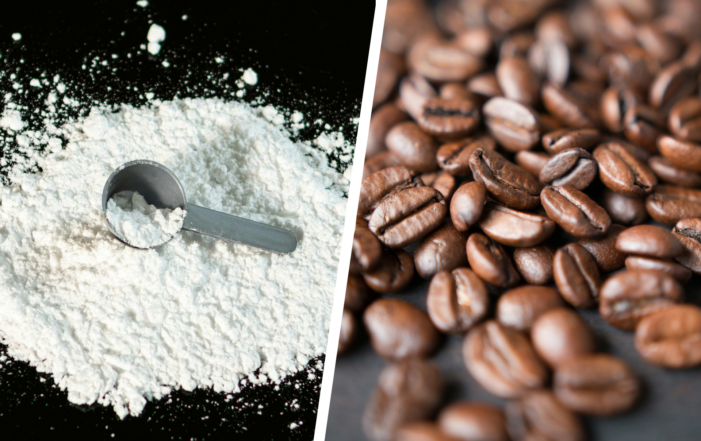

Kann Koffein die Leistung in der Schule steigern?

Thema Koffein wird seit einigen Jahren immer wieder kritisch in den Medien
diskutiert.
Tagtäglich konsumieren rund 80-90% der Erwachsenen Koffein. Einige trinken Kaffee, um wach
zu bleiben und andere nutzen Koffein in Form von Tabletten oder Pulver, um ihre sportliche
Leistungsfähigkeit zu steigern.


Die Wirkung des Koffeins
Koffein ist jedoch auch in Tee, Schokolade und Kakao enthalten. Die Europäische Behörde für Lebensmittelsicherheit (EFSA) beschreibt Koffein als eine natürliche, psychoaktive Substanz, die in mehr als 60 Pflanzen vorkommt, wie Kaffeebohnen, Teeblättern und Guaranasamen. Diese Pflanzen produzieren Koffein, um sich vor Fressfeinden wie Insekten zu schützen, da der Stoff auf viele Tiere toxisch wirkt.
Die erste Nutzung von Koffein durch den Menschen fand bereits vor mehreren Jahrhunderten in Äthiopien statt.Die Galla-Stämme zermahlten damals reife Beeren, vermischten sie mit tierischem Fett und formten daraus kleine Bälle, um sie als Mittel gegen Erschöpfung und Hunger in kriegerischen Auseinandersetzungen zu nutzen.
Heute konsumieren viele Menschen täglich koffeinhaltige Produkte in den unterschiedlichsten Formen, oft ohne über die möglichen langfristigen Risiken nachzudenken. Besonders Jugendliche werden durch Werbung, soziale Medien und auffällige Designs von Energy-Drinks stark beeinflusst und häufig zum Konsum animiert. Der Konsum dieser und anderen koffeinhaltiger Getränke hat in den letzten Jahren vor allem bei Schülern stark zugenommen. In diesem Aufsatz beschäftige ich mich daher mit der Frage, ob Koffein als leistungssteigerndes Mittel in der Schule und im Alltag eingesetzt werden kann, ohne dabei gesundheitliche Risiken einzugehen.
Eigenschaften des Koffeins

Bei Raumtemperatur ist Koffein ein weißes, geruchloses, kristallines Pulver mit einem bitteren
Geschmack. Es setzt sich aus 8 Kohlenstoff-, 10 Wasserstoff-, 4 Stickstoff- und 2
Sauerstoffatomen zusammen. Die chemische Summenformel für Koffein ist daher C8H10N4O2.
Der chemische Name lautet 1,3,7-Trimethylxanthin und weist darauf hin, dass Koffein ein
Purinalkaloid ist. Die Moleküle von Koffein ähneln denen wichtiger Bestandteile unserer DNA,
wie Adenin und Guanin. Adenosin ist eine körpereigene Substanz, die beim Abbau von Energie
entsteht und den Körper müde macht, indem es bestimmte Rezeptoren im Gehirn aktiviert.
Durch die Ähnlichkeit zum Adenosin kann das Koffein Adenosin-Rezeptoren blockieren, die
normalerweise Müdigkeit auslösen. Dies führt zu dem Effekt, den viele Menschen durch den
Koffeinkonsum erwarten: Sie fühlen sich wacher und aufmerksamer, obwohl der Körper
eigentlich Ruhe benötigt. Koffein beeinflusst außerdem die Aktivität bestimmter
Neurotransmitter, also chemischer Botenstoffe, wie die Gamma-Amino-Buttersäure (GABA).
Diese ist dafür verantwortlich, dass wir uns entspannen und schlafen können. Koffein hemmt die
Wirkung von GABA, wodurch die entspannende Wirkung reduziert wird und wir uns weniger
müde fühlen.
Wird Koffein konsumiert, wirkt es auf das Nervensystem. Durch seine fettlösliche Eigenschaft kann es leicht durch die Zellmembranen des Körpers und somit durch die Dünndarmwand dringen. Sobald es im Magen-Darm-Trakt angekommen ist, gelangt es schnell in den Blutkreislauf und wird innerhalb von 30-45 Minuten im Körper verteilt. Es gelangt auch ins Gehirn über die Blut-Hirn-Schranke, die normalerweise das Gehirn vor schädlichen Stoffen wie zum Beispiel Krankheitserreger schützt. Das erklärt, warum Koffein so schnell seine psychoaktive Wirkung entfaltet und uns wacher macht.
Auswirkungen von Koffein auf den Körper
Nach der Aufnahme wird Koffein in der Leber abgebaut und schließlich über den Urin ausgeschieden. Der Abbau kann durch Faktoren wie Geschlecht, Alter, Gewicht und genetische Veranlagung beeinflusst werden. Das bedeutet, dass die Wirkung von Koffein bei jedem Menschen unterschiedlich lange anhält.
Im Weiteren werde ich die negativen Auswirkungen des Koffeinkonsums erläutern. Dabei geht es speziell um Jugendliche und den Konsum von Energy-Drinks. Es ist zu beachten, dass die Wirkung von Koffein bei jedem Menschen unterschiedlich ist.

Sobald das Koffein im Blutkreislauf aufgenommen wurde, kann es den Herzschlag
beschleunigen und zu einer Erhöhung des Blutdrucks führen.
Dies passiert, weil Koffein die
Blutgefäße verengt und die Aktivität des Herzens anregt. Direkt nach der Aufnahme ist dieser
Effekt besonders stark und hält etwa 30 Minuten an. Studien haben gezeigt, dass der Konsum
von koffeinhaltigen Getränken in angemessenen Mengen positive Effekte auf die Wachsamkeit
und Leistungsfähigkeit haben kann. Doch ebenso wurde anhand von Studien festgestellt, dass
der Konsum bei Jugendlichen, insbesondere Energydrinks, mit negativen gesundheitlichen
Auswirkungen verbunden sein kann.
Nebenwirkungen von Koffein

Zu den typischen Nebenwirkungen einer Koffeinüberdosis gehören Nervosität, Schlaflosigkeit, Gesichtsrötungen, Muskelzuckungen, Psychomotorische Unruhe sowie Herzrasen und „Herzstolpern“. In extremen Fällen kann eine Überdosis auch zum Tod führen. Dafür müssten etwa 20 oder mehr Tassen Kaffee konsumiert werden. Aus diesem Grund ist eine tödliche Wirkung von Koffein meist nur bei der Einnahme von Koffeintabletten oder extrem hochdosierten Energy-Produkten zu erwarten.
Wolfgang Beiglböck beschreibt in seinem Buch Koffein – Genussmittel oder Suchtmittel?, dass Koffein auch langfristige Auswirkungen auf die Gehirnentwicklung von Jugendlichen haben kann. Laut Wissenschaftlern entwickeln sich wesentliche Gehirnstrukturen bis zum 20. Lebensjahr weiter – insbesondere während der Tiefschlafphasen. Koffein beeinträchtigt diese jedoch, indem es die Dauer und Intensität reduziert. Dies könnte langfristig die geistige und emotionale Entwicklung von Jugendlichen negativ beeinflussen.
Beiglböck schreibt außerdem, dass weitere Studien gezeigt haben, dass Kinder und Jugendliche, die Koffein konsumieren, im Zusammenhang mit einem impulsiven und aggressiven Verhalten stehen. Diese Kinder und Jugendliche begeben sich verstärkt in gesundheitsgefährdende und unfallträchtige Risikosituationen und nutzen Koffein häufig als Einstiegsdroge, da es den Konsum anderer stimulierender Substanzen fördern könnte. Ein Beispiel dafür sind mehrere Studenten, die im Herbst 2010 aufgrund des Konsums koffeinhaltiger Getränke mit hohen Koffeinmengen und Alkohol einen beinahe komatösen Zustand erlebten. Dabei ist nicht das Koffein an sich gefährlich, sondern Kombinationen von Koffein und Alkohol. Das Koffein verbirgt nämlich die beruhigende Wirkung des Alkohols, was dazu führt, dass mehr Alkohol konsumiert wird, als beabsichtigt.
Informationsquellen:
Beiglböck, W. (2016). Koffein: Genussmittel oder Suchtmittel? Springer Vieweg.
Europäische Behörde für Lebensmittelsicherheit (EFSA). (2015). EFSA erklärt Koffein:
Sicherheit von Koffein in Lebensmitteln.
https://www.efsa.europa.eu/sites/default/
files/corporate_publications/files
/efsaexplainscaffeine15
0527de.pdf
Bayerisches Landesamt für Gesundheit und Lebensmittelsicherheit (LGL). (o.J.). Koffein –
Pflanzeninhaltsstoff mit Wirkung.
https://www.lgl.bayern.de/lebensmittel/
chemie/inhaltsstoffe/pflanzeninhaltsstoffe/koffein.htm
Bildquellen:
www.wn.de/muensterland/kreis-steinfurt/steinfurt/schulstress-schlagt-auf-die-psyche-1404925
https://www.speicher-consorten.de/dunkle-schokolade-gesund-dank-geringem-zucker-und-fehlendem-milchanteil/
https://pixers.de/leinwandbilder/transparente-tasse-gruner-tee-60837050
https://www.verbraucherzentrale-bawue.de/lebensmittel/lebensmittelproduktion/schokologie-immer-schoen-fair-bleiben-auch-beim-naschen-46488
https://www.aok.de/pk/magazin/koerper-psyche/gehirn-nerven/aufbau-der-blut-hirn-schranke/
https://www.sigmaaldrich.com/DE/de/product/sial/c6035
https://www.deutsche-apotheker-zeitung.de/news/artikel/2015/08/13/Metformin-senkt-Cholesterol-Werte
https://www.flowfinder.de/nervositaet-und-aufregung/
https://www.allergosan.com/de-ch/blog/schlaflosigkeit/
https://stock.adobe.com/de/images/the-boy-who-shows-an-angry-emotion-the-concept-of-emotion-of-a-violent-child/273904805